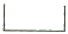
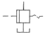
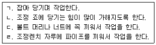
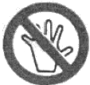
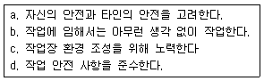

타워크레인운전기능사 (2009-03-29 기출문제)
1과목: 타워크레인 구조 및 기능일반
1. 타워크레인의 방호장치에 해당되는 것은?
- 카운터 지브
- 훅크 블록
- 선회장치
- 비상정지 장치
(정답률: 84%)

2. 타워 크레인에서 트롤리 이동용(횡행용) 와이어 로프의 안전율은?
- 2
- 3
- 4
- 5
(정답률: 85%)
3. 다음 중 타워크레인의 주요 구조부가 아닌 것은?
- 설치기초
- 지브(jib)
- 수직사다리
- 원치, 균형추
(정답률: 74%)
4. 발전기의 원리인 플레밍의 오른손 법칙에서 엄지손가락은 다음 중 어느 방향을 가리키는가?
- 도체의 운동 방향
- 자력선 방향
- 전류의 방향
- 전압의 방향
(정답률: 75%)
5. 타워크레인의 동작 중, 수직면에서 지브각을 변화하는 것을 무엇이라고 하는가?
- 기복
- 황행
- 주행
- 권상
(정답률: 82%)
6. 다음 유압장치 중 타워크레인 상승작업에 필요한 동력(Power)과 관계가 먼 것은?
- 실린더 피스톤 헤드 지름
- 펌프유량
- 실린더 길이
- 체크, 릴리프 밸브
(정답률: 56%)
7. 타워 크레인의 운전에 영향을 주는 안정도 설계 조건을 설면한 것 중 틀린 것은?
- 하중은 가장 불리한 조건으로 설계한다.
- 안정도는 가장 불리한 값으로 설계한다.
- 안정모멘트 값은 전도 모멘트의 값 이하로 한다.
- 비 가동시는 지브의 회전이 자유로워야 한다.
(정답률: 56%)
8. 옥외에 설치된 주행타워크레인에서 폭풍에 의한 이탈방지조치는 순간 풍속이 얼마를 초과할 때 하여야 하는가?
- 10m/s
- 12m/s
- 20m/s
- 30m/s
(정답률: 73%)
9. 타워크레인의 콘크리트 기초 앵커 설치시 고려해야할 사항이 아닌 것은?
- 콘크리트 기초앵커 설치시의 지내력
- 콘크리트 블록의 크기
- 콘크리트 블록의 형상
- 콘크리트 블록의 강도
(정답률: 88%)
10. 타워크레인으로 들어 올릴 수 있는 최대 하중을 무슨 하중이라 하는가?
- 정격 하중
- 권상 하중
- 끝단 하중
- 동 하중
(정답률: 73%)
11. 다음 하중에서 동하중에 해당하지 않는 것은?
- 위치 하중
- 반복 하중
- 교번 하중
- 충격 하중
(정답률: 42%)
12. 타워크레인 방호장치 점검사항이 아닌 것은?
- 과부하방지장치의 점검
- 슬루잉기어 손상 및 균열 점검
- 모멘트 과부하 차단 스위치 작동점검
- 훅크 상부와 시브와의 간격점검
(정답률: 52%)
13. 다음 중 유압펌프의 분류에서 회전펌프가 아닌 것은?
- 피스톤 펌프
- 기어 펌프
- 스크류 펌프
- 베인 펌프
(정답률: 72%)
14. 다음 유압기호 중 체크 밸브를 나타낸 것은?


(정답률: 63%)
15. 타워 크레인 접지에 대한 설명으로 맞는 것은?
- 주행용 레일에는 접지가 필요 없다.
- 전동기 및 제어반에는 접지가 필요 없다.
- 타워크레인은 특별 3종 접지로 10Ω 이하이다.
- 타워크레인 접지 저항은 녹색 연동선을 사용하며 10Ω 이상이다.
(정답률: 74%)
16. 타워크레인용 전기기계기구 외함 구조는 운전실 등 옥내에 설치되는 일부분을 제외하고는 사용ㆍ설치장소의 조건인 옥외에 적합한 구조이어야 하는데 IEC Code에 의한 IP 등급분류에 적합한 것은?
- IP54
- IP44
- IP34
- IP24
(정답률: 82%)
17. 타워크레인에서 권상시 트롤리와 훅크가 충동하는 것을 방지하는 장치는?
- 권과 방지장치
- 속도 제한장치
- 충돌 방지장치
- 비상 정지장치
(정답률: 64%)
18. 타워크레인의 선회장치를 설명하였다. 잘못된 것은?
- 트러스 또는 A-프렘 구조로 되어있다.
- 메인 지브와 카운터 지브가 상부에 부착되어 있다.
- 회전테이블과 지브 연결 지점 점검용 난간대가 있다.
- 마스트의 최상부에 위치하며 상ㆍ하 부분으로 되어있다.
(정답률: 51%)
19. 다음 중 과전류 차단에 요구되는 성능에 관한 설명 중 맞는 것은?
- 과부하 등 적은 과전류가 장시간 계속 흘렀을 때 동작하지 않을 것
- 과전류가 작아졌을 때 단시간에 동작 할 것
- 큰 단락 전류가 흘렀을 때는 순간적으로 동작 할 것
- 전동기의 시동전류와 같이 단시간 동안 약간의 과전류가 흘렀을 때 돌작할 것
(정답률: 76%)
20. 배선용 차단기에 대한 설명이 틀린 것은?
- 개폐 기구를 겸해서 구비하고 있다.
- 접점의 개폐 속도가 일정하고 빠르다.
- 과전류 시 작동(차단)한 차단기는 반복해서 사용할 수가 없다.
- 과전류가 1극(3선 중 1선)에만 흘러도 작동(차단)한다.
(정답률: 87%)
2과목: 양중작업 일반
21. 양중용구를 사용할 때의 주의사항과 관련 없는 것은?
- 용구의 접촉개소
- 하중분포
- 하중물의 내구성
- 인양물의 반전방향
(정답률: 50%)
22. 타워크레인 작업시의 신호방법으로 바람직하지 않은 것은?
- 신호수단으로 손, 깃발, 호각 등을 이용한다.
- 신호는 절도있는 동작으로 간단명료하게 한다.
- 신호자는 운전자가 보기 쉽고 안전한 장소에 위치하여야 한다.
- 운전자에 대한 신호는 신호의 정확한 전달을 위하여 최소한 2인 이상이 한다.
(정답률: 94%)
23. 타워크레인의 안전운전 작업으로 부적합한 것은?
- 고장 중의 기기에는 반드시 표시를 할 것
- 정전시는 전원을 off의 위치로 할 것
- 대형 하물을 권상할 때는 신호자의 신호에 의하여 운전 할 것
- 잠깐 운전석을 비울 경우에는 콘크롤러를 ON한 상태에서 비울 것
(정답률: 94%)
24. 인양물이 자유로이 흔들리는 현상을 후리(Free)라 한다. 다음 설명 중 바르지 못한 것은?
- 슬루잉 후리 : 인양물과 지브의 최초위치가 운전석에서 볼 때 같은 상하 일직선상에 놓이지 않았을 경우 발생
- 트롤리 후리 : 르롤리 대차가 이동하는 과정에서 발생
- 회전 후리(원 후리) : 지브가 선회하는 과정에서 주로 발생
- 이중 후리(복합 후리) : 통제하기 가장 어려운 후리로 최초 인양물 권상 시 많이 발생
(정답률: 50%)
25. 주행(Travelling)타워의 상시 점검사항이 아닌 것은?
- 레일 지반의 평탄성
- 레일 크램프의 이상유무
- 주행 레일의 규격
- 주행로의 장애물
(정답률: 75%)
26. 다음 중 육성신호 메시지 중 틀린 것은?
- 간결
- 단순
- 명확
- 중복
(정답률: 89%)
27. 수신호에 대한 설명이다. 올바른 것은?
- 타워 기종마다 매뉴얼에 있는 수신호 방법을 따른다.
- 현장의 공동 작업자와 신호방법을 사전에 정한다.
- 고시된 표준신호방법을 준수하여 작업한다.
- 경험과 지식이 있으면 신호를 무시해도 상관없다.
(정답률: 62%)
28. 타워크레인 트롤리 전ㆍ후 작업중 이동불량 상태가 생기는 원인이 아닌 것은?
- 트롤리 모터의 소손
- 전압의 강하가 클 때
- 트롤리 정지장치 불량
- 트롤리 감속기 윔기어의 불량
(정답률: 39%)
29. 타워크레인의 양중작업 방법에서 중심이 한쪽으로 치우친 하물의 줄걸이 작업 시 고려할 사항이 아닌 것은?
- 하물의 수평유지를 위하여 주 호프와 보조로프의 길이를 다르게 한다.
- 무게 중심 바로 위에 훅크가 오도록 유도한다.
- 좌우 로프의 장력차를 고려한다.
- 와이어로프 줄걸이 용구는 안전율이 2 이상인 것을 선택 사용한다.
(정답률: 80%)
30. 크레인으로 하물을 들어 올릴 경우 옳지 않는 것은?
- 하물 중심선에 훅크가 위치하도록 한다.
- 바닥에서 로프가 장력을 받을 때부터 주행을 출발시킨다.
- 로프가 충분한 장력을 가질 때까지 서서히 권상한다.
- 하물은 권상이동 경로를 생각하여 지상 2m 이상의 높이에서 운반하도록 한다.
(정답률: 71%)
31. 신호방법 중 왼손을 오른손으로 감싸 2~3회 적게 흔들면서 호각을 길게 부는 신호 방법은?
- 물건걸기
- 정지
- 마그넷 붙이기
- 기다려라
(정답률: 47%)
32. 시징(seizing)은 와이어로프 지름의 몇 배를 기준으로 하는가?
- 1
- 3
- 5
- 7
(정답률: 68%)
33. 와이어로프에 킹크 현상이 가장 발생하기 쉬운 경우는?
- 새로운 로프를 취급할 경우
- 새로운 로프를 교환 후 약 10회 작동하였을 경우
- 로프가 사용한도가 되었을 경우
- 로프가 사용한도를 지났을 경우
(정답률: 58%)
34. 와이어로프 교체 시기가 아닌 것은?
- 녹이 생겨 심하기 부식 된 것
- 소선의 수가 10% 이상 단선 된 것
- 공칭지름이 3% 초과 된 것
- 킹크가 생긴 것
(정답률: 92%)
35. 크레인용 일반 와이어로프 소선의 인장 강도(kgf/mm2)는 보통 어느 정도인가?
- 135~180
- 40~50
- 10~20
- 85~150
(정답률: 60%)
36. 지브 크레인의 지브(붐) 길이 20m 지점에서 10톤의 하물을 줄걸이하여 인양하고자 할 때 이 지점에서 모멘트는 얼마인가?
- 20 tonㆍm
- 100 tonㆍm
- 200 tonㆍm
- 300 tonㆍm
(정답률: 79%)
37. 체인에 대한 설명으로 틀린 것은?
- 고열물이나 수중, 해중 작업에서 사용한다.
- 매다는 체인의 종류에는 스터드 체인, 롱링크 체인, 숏링크 체인 등이 있다.
- 롤러체인을 고리모양으로 연결할 때 링크의 층수가 짝수라야 편리하며, 링크의 수가 짝수일 때 옵셋링크를 사용하여 연결한다.
- 체인의 신장은 신품 구입시보다 5%가 늘어나면 사용이 불가능하다.
(정답률: 55%)
38. 안전계수를 구하는 공식은?
- 안전하중/절단하중
- 시험하중/정격하중
- 시험하중/안전하중
- 절단하중/안전하중
(정답률: 63%)
39. 줄걸이 작업에 사용하는 Hooking 용 핀 또는 봉의 지름은 줄걸이용 와이어 로프 직경의 얼마 이상을 사용하는 것이 바람직한가?
- 1배 이상
- 2배 이상
- 4배 이상
- 6배 이상
(정답률: 74%)
40. 크레인으로 중량물을 인양하기 위해 줄걸이 작업을 할 때의 주의사항으로 틀린 것은?
- 중량물의 중심위치를 고려한다.
- 줄걸이 각도를 최대한 크게 해준다.
- 줄걸이 와이어로프가 미끄러지지 않도록 한다.
- 날카로운 모서리가 있는 중량물은 보호대를 사용한다.
(정답률: 99%)
3과목: 타워크레인 설치.해체 일반
41. 와이어 가잉으로 고정할 때 준수해야 할 사항이 아닌 것은?
- 등각에 따라 4-6-8 가닥으로 지지 및 고정이 가능하다.
- 경사각은 3~90°의 안전각도를 유지한다.
- 가잉용 와이어의 코아는 섬유심이 바람직하다.
- 와이어 긴장은 장력 조절장치 또는 턴버클을 사용한다.
(정답률: 55%)
42. 타워크레인 설치(상승 포함), 해체작업자가 특별 안전보건교육을 이수해야 하는 최소 시간은?
- 1시간 이상
- 2시간 이상
- 3시간 이상
- 4시간 이상
(정답률: 83%)
43. 타워크레인을 건물 내부에서 클라이밍 작업으로 설치하고자 할 때, 클라이밍 프레임으로 건물에 고정하는데 반드시 몇 개를 사용하여야 하는가?
- 1개
- 2개
- 3개
- 4개
(정답률: 56%)
44. 미스트 연장작업(텔레스코핑) 시 양쪽 지브의 균형을 유지하는 방법이 아닌 것은?
- 카운터 지브에 있는 밸러스트(균형추)를 내려놓은 방법
- 제작 메이커에서 지정하는 무게를 권상하여 지브위치로 트롤리를 이동하면서 균형을 유지하는 방법
- 자체 마스트를 권상하여 지브위치로 트롤리를 이동하면서 균형을 유지하는 방법
- 지브위치로 트롤리를 이동하면서 균형을 유지하는 방법
(정답률: 60%)
45. 타워크레인에서 사용하는 조립용 볼트는 대부분 12.9의 고장력 볼트를 사용하는데 이 숫자가 의미한 것으로 맞는 것은?
- 12 : 120kgf/mm2의 인장강도
- 9 : 90kgf/mm2의 인장강도
- 12 : 볼트의 등급이 12
- 9 : 너트의 등급이 9
(정답률: 84%)
46. 타워크레인 지브에서 이동요령 중 안전에 어긋나는 것은?
- 트롤리의 점검대를 이용한 이동
- 안전로프에 안전대를 사용하여 이동
- 2인 1조로 손을 잡고 이동
- 지브 내부의 보도 이용
(정답률: 90%)
47. 타워크레인 구조물 해체작업시 올바른 운전방법이 아닌 것은?
- 해체작업시 주전원을 차단한다.
- 해체작업 중 양쪽 지브의 균형유지 여부를 확인한다.
- 슬루잉 링 서포트와 베이직 마스트 연결시 약간 선회를 한다.
- 마스트 핀이 체결되지 않은 상태에서 선회동작은 금한다.
(정답률: 73%)
48. 유해ㆍ위험 취업제한에 관한 규칙에서 자격 등의 취득을 위한 지정교육기관으로 허가받고자 할 경우 다음 중 허가권자는?
- 국토해양부장관
- 지식경제부장관
- 중소기업청장
- 노동부장관
(정답률: 82%)
49. 수직볼트를 사용하는 마스트의 볼트 체결방법으로 맞는 것은?
- 대각선 방향으로 아래, 위로 향하게 조립한다.
- 볼트의 헤드부가 전체 위로 향하게 조립한다.
- 볼트의 헤드부가 전체 아래로 향하게 조립한다.
- 왼쪽부터 하나씩 아래, 위로 향하게 조립한다.
(정답률: 52%)
50. 설치작업 시작 전 착안 사항이 아닌 것은?
- 기상확인
- 역할분담 지시
- 줄걸이, 공구 안전점검
- 타워크레인 기종 선정
(정답률: 83%)
51. 가스가 새어 나오는 것을 검사할 때 가장 적합한 것은?
- 비눗물을 발라 본다.
- 순수한 물을 발라 본다.
- 기름을 발라 본다.
- 촛물을 대어 본다.
(정답률: 94%)
52. 보기의 조정렌치 사용상 안전수칙 중 옳은 것은?

- ㄱ. ㄴ
- ㄱ, ㄷ
- ㄴ, ㄷ
- ㄴ, ㄹ
(정답률: 68%)
53. 동력 전동장치에서 가장 재해가 많이 발생할 수 있는 것은?
- 기어
- 커플링
- 벨트
- 차축
(정답률: 90%)
54. 안전ㆍ보건표지의 종류와 형태에서 그림의 안전표지판이 나타내는 것은?

- 보행금지
- 작업금지
- 출입금지
- 사용금지
(정답률: 72%)
55. 해머(hammer)작업에 대한 내용으로 잘못된 것은?
- 작업자가 서로 마주보고 두드린다.
- 녹슨 재료 사용시 보안경을 사용한다.
- 타격범위에 장해물이 없도록 한다.
- 작게 시작하여 차차 큰 행정으로 작업하는 것이 좋다.
(정답률: 86%)
56. 화재의 분류 기준에서 휘발유(액상 또는 기체상의 연료성 화재)로 인해 발생한 화재는?
- A급 화재
- B급 화재
- C급 화재
- D급 화재
(정답률: 82%)
57. 다음 보기에서 작업자의 올바른 안전 자세로 모두 짝지어 진 것은?

- a, b, c
- a, c, d
- a, b, d
- a, b, c, d
(정답률: 95%)
58. 가스 용접장치에서 산소 용기의 색은?
- 청색
- 황색
- 적색
- 녹색
(정답률: 79%)
59. 훅의 점검은 작업 개시 전에 실시하여야 한다. 안전에 잘못된 사항은?
- 단면 지름의 감소가 원래 지름의 5% 이내 일 것
- 균열이 없는 것을 사용할 것
- 두부 및 만곡의 내측에 홈이 있는 것을 사용할 것
- 개구부가 원래 간격의 5% 이내일 것
(정답률: 84%)
60. 산업공장에서 재해의 발생을 적게 하기 위한 방법 중 틀린 것은?
- 폐기물은 정해진 위치에 모아둔다.
- 공구는 소정의 장소에 보관한다.
- 소화기 근처에 물건을 적재한다.
- 통로나 창문 등에 물건을 세워 놓아서는 안된다.
(정답률: 96%)